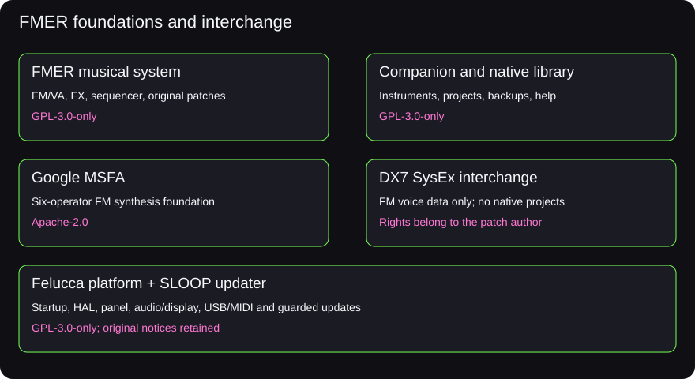

Reference
Licensing, credits and interoperability
GPLv3 for original FMER software and defaults, with clear credit and format boundaries.
Original FMER firmware, FMER Companion and all64 original FMER default instruments are licensed under the GNU General Public License version3 only (GPL-3.0-only). Read the complete license and attribution notice. The portable ZIP includes matching source and dependency notices; third-party components retain their own terms.
What comes from Felucca?
FMER uses reviewed Felucca startup and interrupt code, hardware abstraction, panel input scanning, audio/display hardware support, USB MIDI/audio, MIDI UART and update support. The pinned platform is Felucca v1.0.1, commit20c275e39f75fa820978032efaceddfc5283c8cb, by Leo Kuroshita and Hügelton Instruments. FMER adapts these sources with recorded changes. This is the low-level foundation that lets the firmware talk to the FM-1.
The FM synthesis engine uses selected Google MSFA code under Apache-2.0. FMER adds its VA engine, effects implementation, performance/sequence state, library formats, original default instruments, companion and interaction model. Felucca's entire musical engine, sound library and native project format are not imported merely by sharing its hardware support. The guarded updater has a separately pinned SLOOP foundation; its source retains original notices and records FMER modifications.
Interchange is a format contract
Standard DX7 single-voice and32-voice bank SysEx files provide FM6 interchange. They carry six-operator FM sound data, not FMER VA engines, effects, patterns, songs, mixer state or global settings. Use a native FMER backup to preserve those. A Felucca native project or firmware file is not an FMER project. Sharing platform code does not make the storage or management protocols interchangeable. Use Library / Import DX7 FM or select one or32 FM instruments / Export DX7 FM. Felucca's FM6 editor can export standard .syx for this path. Native Felucca JSON projects and its other engines are not mapped. See the exchange workflow and Backups for exact scopes.
Your patches and your music
The editable recipes for the original64 defaults are in core/factory_presets.cpp in Corresponding Source.zip. You can edit and share them under GPLv3. Imported patches keep their own rights; do not assume an available bank can be redistributed. User-authored patches and projects remain their authors' work. Playing or recording FMER does not by itself require your music to use GPL.
Official development and public feedback
The owner directs the official FMER project and its releases. Testing and feedback are welcome through issues. Outside pull requests require explicit prior maintainer permission. This governs contributions to the official repository; it does not restrict anyone's GPL rights to modify, fork or redistribute the software, including commercial distribution. No endorsement by M-VAVE, Felucca, SLOOP or Google is implied.
FMER splash artwork
The project owner confirmed ownership and licensed the original FMER splash artwork and its editable source under GPL-3.0-only on 19 October 2026. Corresponding Source.zip includes the original FMER SPLASH.png, tools/generate_fm1_visuals.py and the generated firmware header. The artwork source notice is docs/release/ARTWORK.md. No separate layered or vector source was supplied.
Separate rights and release checks
Research materials, vendor firmware, imported banks, private unit dumps, and toolchain components are not blanket-relicensed by FMER. An explicitly licensed official vendor resource may be supplied under its own terms after review; a private ROM dump is not a universal recovery image. Full distribution details and remaining release checks are in LICENSING.md and DEPENDENCIES.md in the source package. FMER is provided without warranty under the license.
Source-built firmware runtime
Revision734-r2 builds the required C/math helpers from included Newlib2.2.0 and LLVM compiler-rt4.0.1 sources under their existing permissive licenses. Source hashes and complete notices accompany Companion. The pi32v2 compiler remains an external developer prerequisite; its precompiled runtime archives are not linked or bundled. Synth, effects and menu code is unchanged.
Official vendor resources
The October2026 review found an explicit Apache-2.0 grant for the exact V15 image published in M-VAVE's fm1_open repository. That finding does not cover private dumps or every vendor asset. Revision734-r2 uses only its licensed configuration and EQ data, with provenance and notices; it does not bundle the full stock firmware, boot code or patch bank. The full image is not installed: the public V15 application/configuration layout and the separate open V13 user-data layout need migration and rollback work before installation is supported. See firmware and recovery. The pinned evidence and source references are included in the project research records.
